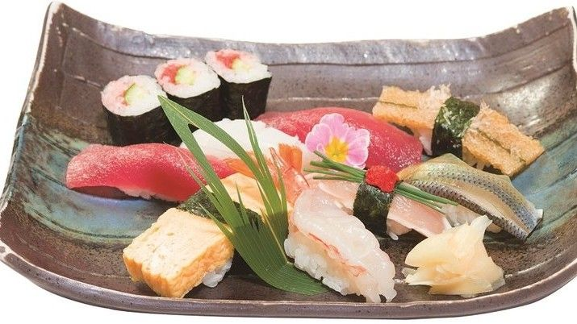
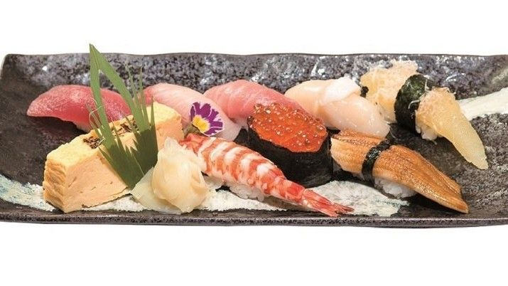
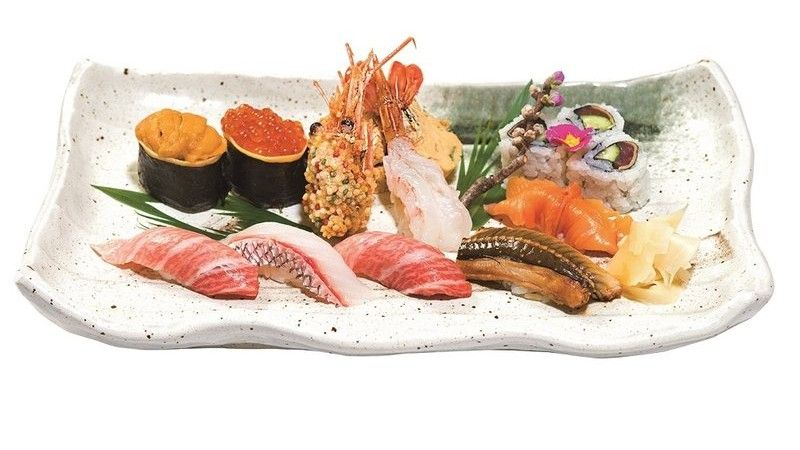

Our signature
Nigiri Sushi Sets
にぎり寿司
Hand-pressed one piece at a time by our chefs, with seasonal seafood. Sit at the counter to watch your sushi being made right in front of you.
Tap a set to see it.
Our everyday set — a good first taste of our nigiri.
A step up, with a wider selection of toppings.
A generous, colorful assortment — a popular choice.
Our finest set, with premium seasonal toppings.
Lunch (Mon–Sat 11:00–15:00, except public holidays): comes with chawanmushi (savory egg custard) and salad.
See all nigiri